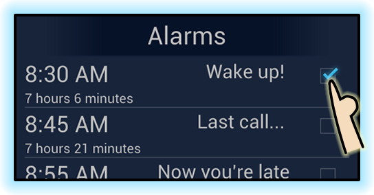
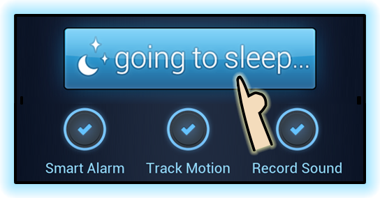
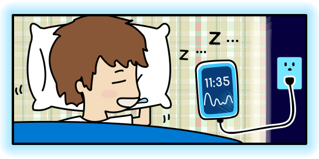
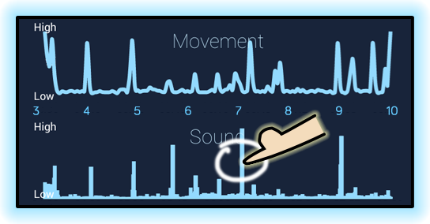

If you’ve ever woken up to a blaring alarm clock which made you feel tired the whole day, you know how we wake up is extremely important to our sleep quality.
When you use a regular alarm, you can get jolted awake during deep sleep. SleepBot detects your lightest sleep phase based on movements and sounds, and gradually nudges you awake at the optimal time.
Set your alarm(s): You can even set and customize multiple ones as alerts, for different people, or precautions.

Start tracking: Choose your options (explained below) and tap "going to sleep" or using the widget!

Phone placement: Make sure your phone is close to your body. For movement tracking, plug in phone to preserve battery. For sound recording, keep it near your head.

Smart alarm will wake you at the optimal time within your first alarm\'s selected range.
Review your sleep here or on mysleepbot.com. Tap on graphs to zoom in; tap on sound spikes to hear noises!

Tracking Options
Choose how you want to track your sleep. Easily switch options on and off.
Smart Alarm - Wakes you gently at the best time within your selected alarm range window before earliest alarm. (only works if you have punched in. Since dismissing alarm punches out, other alarms act normally) If motion tracking is off, Smart Alarm automatically begins motion tracking 30 min. prior to alarm.
Track Motion - Uses accelerometer to track movements throughout the night. When this is on, make sure your phone is plugged in. (Don‘t press "home" / "power" buttons-- phone accelerometers only work when the screen is on! Screen will automatically dim after a few seconds.)
Record Sound - Record snoring, sleeptalking, or other noises. Play sounds by clicking on spikes in the noise graph. Sound files are never uploaded or backed up unless you specify!